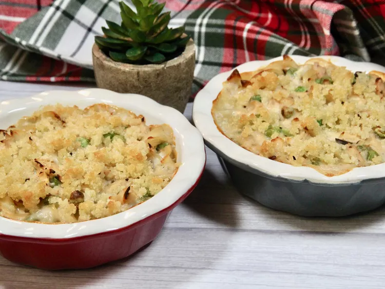

Tuna Noodle Casserole

This tuna noodle casserole uses condensed cream of mushroom soup to flavor a creamy sauce that is mixed with tuna, egg noodles, and peas, topped with a crunchy bread crumb topping, and baked to perfection.
Campbell’s tuna noodle casserole recipe, which comes together quickly with cheap ingredients, is the quintessential comfort food.
Ingredients
- Noodles
- Soup
- Tuna
- Peas
- Milk
- Bread Crumbs
- Butter
Steps
- Stir the noodles, soup, tuna, peas, and milk together in a casserole dish
- Bake the noodle mixture until hot
- Make the topping and sprinkle it over the casserole
- Continue baking until the bread crumbs are golden brown and crispy